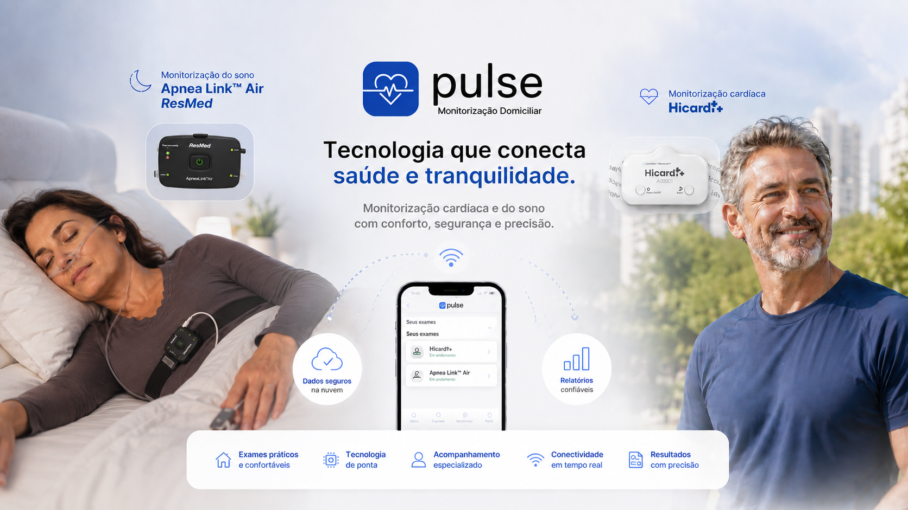
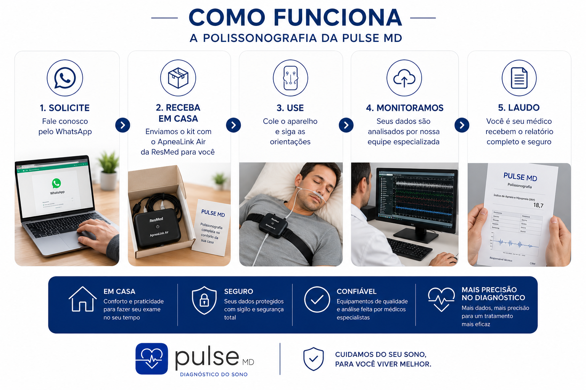

Nossas especialidades

Monitorização Cardíaca
Holter prolongado com telemetria em tempo real e acompanhamento especializado.
Saiba mais
Monitorização cardíaca prolongada e avaliação do sono com tecnologia avançada, logística própria e acompanhamento especializado.
Quero orientação especializada
Holter prolongado com telemetria em tempo real e acompanhamento especializado.
Saiba mais
A evolução da monitorização a domicilio permite que exames especializados sejam realizados no ambiente habitual do paciente, com mais conforto, praticidade e qualidade diagnóstica.
Alterações cardíacas podem acontecer de forma intermitente — e muitas vezes não aparecem em exames rápidos ou realizados em um único momento.
Métodos tradicionais utilizam fios, cabos e gravações limitadas, onde a qualidade dos dados só é avaliada ao final do exame.
Com a monitorização cardíaca domiciliar prolongada da Pulse MD, você conta com telemetria em tempo real, acompanhamento remoto e suporte durante todo o processo — garantindo dados mais completos e maior segurança para o diagnóstico.

Hoje a Pulse MD oferece monitorização cardíaca domiciliar e polissonografia domiciliar, permitindo a realização de exames especializados sem necessidade de deslocamento até clínicas ou laboratórios.
Tudo começa com um contato rápido pelo WhatsApp. Nossa equipe realiza o atendimento inicial e envia um orçamento de acordo com a sua cidade e região.
Após a confirmação, você recebe o equipamento indicado para o exame solicitado, acompanhado de suporte especializado e instruções completas.
Durante o exame (monitor cardiaco), você pode acompanhar os dados diretamente pelo seu celular, enquanto todas as informações são enviadas e armazenadas com segurança em nuvem.
Um especialista é designado para acompanhar todo o processo, auxiliando na instalação (que é simples e guiada) e garantindo a qualidade dos dados coletados ao longo do exame.
Seu exame é avaliado por um médico especialista. Ao final do período, o laudo é entregue em até 7 dias úteis para você ou seu médico solicitante.


Holter 7 dias
Monitorização prolongada
Polissonografia domiciliar
Monitorização para atletas
Palpitações e arritmias
Holter inconclusivo
Suspeita de apneia do sono
Ronco e sonolência excessiva

Realize exames especializados no ambiente onde você vive, trabalha e dorme. Uma experiência mais confortável para o paciente e mais representativa da rotina real.
A instalação é rápida, prática e pode ser feita em poucos minutos. Assista ao vídeo e veja como funciona na prática.
Atendimento domiciliar em todo o Sul do Brasil
ou
Encontrar um médicoOfereça aos seus pacientes monitoramento cardíaco prolongado com tecnologia de análise em tempo real, suporte operacional e acompanhamento especializado durante todo o exame.
Nossa solução permite maior possibilidade de registro de eventos intermitentes, sendo especialmente indicada para investigação de sintomas esporádicos, como palpitações, síncope, pré-síncope e casos de Holter inconclusivo.
Com telemetria contínua e dados armazenados em nuvem, é possível acompanhar a evolução do exame, garantindo maior qualidade das informações e mais segurança na tomada de decisão clínica.
Falar com especialista